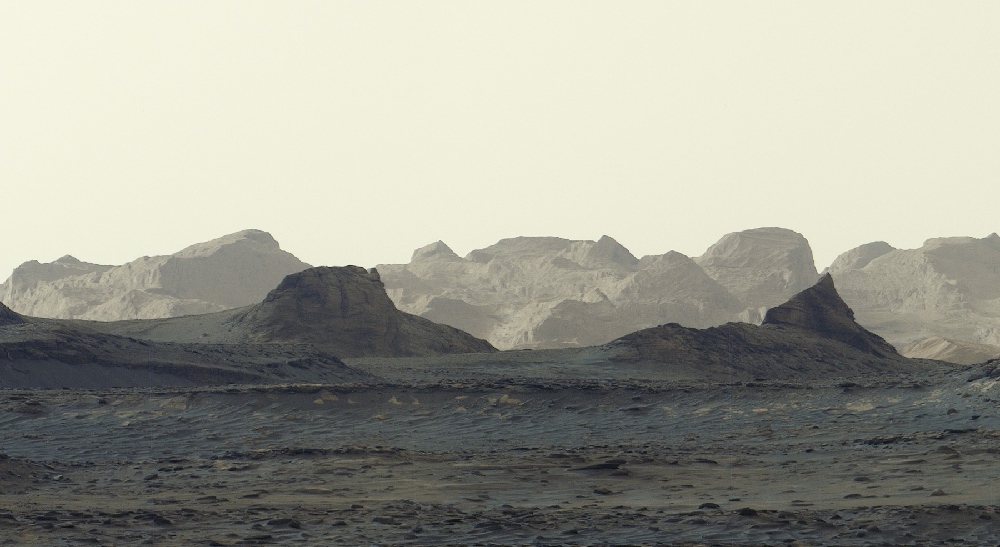

October 06, 2026
8:30 AM on Mars — Curiosity's Stunning Dawn Panorama

NASA/JPL-Caltech/MSSS
NASA's Curiosity rover has been on Mars for more than 14 years. On August 11, 2026 — its 4,982nd Martian day — it stopped, pointed its Mastcam at the horizon at 8:30 a.m. local time, and took six photographs. Stitched together and released October 6, 2026, they form one of the most atmospheric panoramas the mission has ever sent home.
A sunrise with no sun in the frame
The scene shows the foreground of Gale Crater washed in striking blue tones, while bright morning light picks out distant crags on the horizon — jagged, wind-carved rock formations called yardangs.
Unlike most of Curiosity's Mastcam images, this panorama was processed without the usual white balancing — a deliberate artistic choice. White balancing makes Martian images look more like Earth daylight; skipping it preserves the scene as the rover actually saw it at dawn. The blue hues aren't water or ice. They're Mars at 8:30 in the morning.
The cliffs the scientists are waiting for
Those yardangs are the real prize. The yardang layer stretches roughly 10 miles (16 kilometers) across the northwestern reaches of Mount Sharp, the 3-mile-tall (5-kilometer) mountain Curiosity has been climbing since 2014.
Mission scientists have been waiting years to study these cliffs up close, and they're strange ones. "The yardang layer looks out of place. It's the wrong color, the layers tilt at an odd angle, and it almost appears plastered on," said Ashwin Vasavada, Curiosity's project scientist at NASA's Jet Propulsion Laboratory. "But that's what makes it exciting to reach. No one is sure exactly what created this layer, but one idea is it may be ash deposited by ancient volcanic eruptions."
Mount Sharp itself is a layered record of Martian history. Its layers document lakes and streams that covered this part of the Red Planet billions of years ago. Eventually the water dried up, leaving salty minerals behind; after new material stopped settling on the mountain, wind may have stripped some of it away — carving the yardangs we see in this panorama.
The highest climb in history
The rover also just hit a milestone: it has now climbed 0.6 miles (1 kilometer) of elevation — the most ever climbed on Mars by any machine.
Curiosity is in the second year of its fifth extended mission. It will spend most of the next year driving through layers enriched with sulfates and carbonates — both signatures of ancient drying on the surface. Sometime in 2027, scientists hope to reach the base of the yardangs, where the rover can use its robotic arm to collect one-of-a-kind data on these mysterious cliffs.
Fourteen years in, still climbing, still sending home discoveries. Some machines just refuse to stop exploring.
The bottom line: A dawn panorama, a mysterious cliff layer, and the highest climb any machine has ever made on Mars — all in one frame. Image: NASA/JPL-Caltech/MSSS. Source: NASA JPL, Oct 6, 2026.
Source: NASA JPL — read the original report
← Back to latest stories